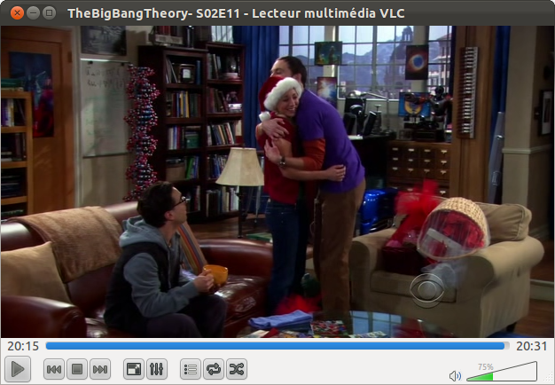

La nouvelle version de VLC, la 2.0 (Twoflower) vient de sortir.
C'est une version majeure qui arrive, avec le support de nouveaux formats, l'utilisation des multi-coeurs, du GPU et du matériel mobile, les Blu-Rays (c'est juste expérimental ça par contre...), des nouveaux filtres pour le son ou la vidéo, et une nouvelle interface, plus sobre et légère (en tout cas sous Linux).
On a donc beaucoup de changements (qui représentent plus de 7000 commits pour les connaisseurs...), mais la plupart ne se voient pas.
Cette version sera intégrée dans les dépôts de Ubuntu 12.04, pour les utilisateurs de la version 11.10 comme moi, rajoutez simplement le PPA suivant pour l'installer et la tester!
sudo add-apt-repository ppa:n-muench/vlcsudo apt-get update && sudo apt-get install vlc